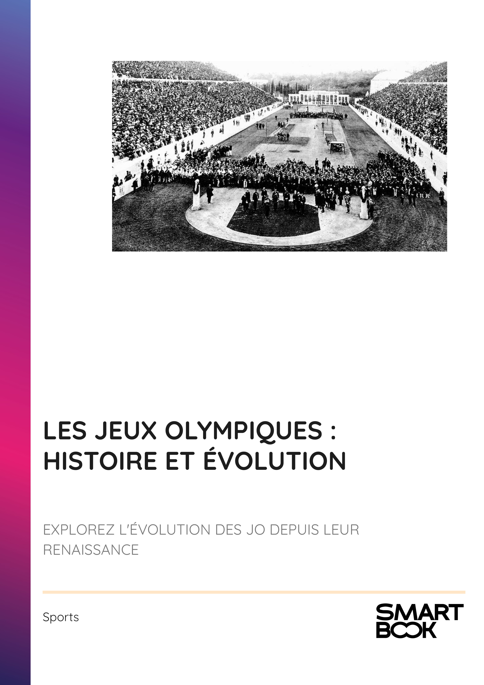

- INTRODUCTION - LES JO : UNE FENÊTRE SUR NOTRE MONDE
- Chapitre 1 - LES ORIGINES DES JO : DE L'ANTIQUITÉ À LA RENAISSANCE
- Chapitre 2 - LA RENAISSANCE MODERNE : PIERRE DE COUBERTIN ET LES PREMIERS JEUX DE 1896
- Chapitre 3 - L'ÉVOLUTION DES DISCIPLINES SPORTIVES AU FIL DES DÉCENNIES
- Chapitre 4 - LES ENJEUX POLITIQUES ET SOCIAUX DES JO
- Chapitre 5 - L'IMPACT DES MÉDIAS SUR LA PERCEPTION DES JEUX
- Chapitre 6 - LES DÉFIS CONTEMPORAINS : INCLUSION ET DIVERSITÉ
- Chapitre 7 - LA DURABILITÉ ET L'ÉCORESPONSABILITÉ DANS L'ORGANISATION DES JEUX
- Chapitre 8 - LA LUTTE CONTRE LE DOPAGE ET LA CORRUPTION
- CONCLUSION - LES JO : UN HÉRITAGE ET UN AVENIR
📄 Consulter les annexes du livre
Mentions légales